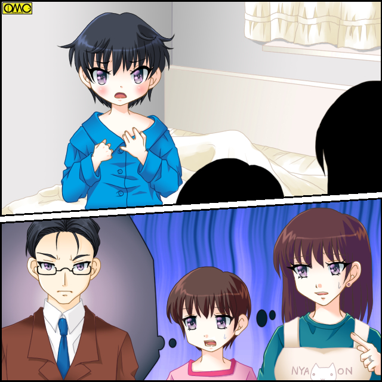

「新堂ぉ。なんだ。その耳飾りは？」
都内のある企業。
その営業の一部所で、部署の長である係長の怒声が飛ぶ。
「耳飾り？ 係長。ピアスも知らないんすか？」
反抗的な態度の青年はこの部署の一員だった。
古い言い方だと「女のような髪」をした青年だった。
ただし肌は海の男のように浅黒い。
名前は新堂 覇道。
「ピアスだとぉ？ 貴様、男のくせに女のような」
その反抗的な態度に口調がきつくなる係長。
「ぷっ」
「何がおかしい？」
「そりゃあ……ピアスが女性専用だなんて、あまりにも時代錯誤なことを言うからですよ。お姫様」
「き、キサマッ」
顔を赤くして怒りに震える係長。４３歳。
念のために言うが男性である。
背はやや足りないが短い髪の「おじさん」で、妻と娘のいる一家の大黒柱である。
それをおちょくるように新堂は続ける。嘲笑込みで。
「あれ？ 敬称つけたんすけどねぇ。比米係長」
この部署の係長の名。それは『比米 輝夜』（ひめ かぐや）だったのだ。
かぐや姫に由来する名前をおちょくられては、わかっていても平常心ではいられない。
２０１６年４月１日。金曜日。
この部署の「ルーチンワーク」が展開されていた。
いくら『平常運転』でも、いつまでもそのままにはしておけない。
「はいはい。係長。新堂君。その辺で。早いところ仕事を済ませて残業しないようにしましょう」
かろうじて身長１５０センチを超えている女子社員。赤須希林がたしなめる。
幼顔もありたまに補導の憂き目にも合うが、２７歳の大人の女性だった。
「そうですよ。三浦くんが場所取りしてますし。待たせちゃかわいそうですよ」
もう一人の女性社員。豆井みどりがいう。
２３歳と若いがプロポーション抜群の美人だ。
「そうっすよ。新宿御苑で花見なんすから」
新堂か追い打ちをかける。
この会社の所在地である新宿での桜の名所。
新宿御苑で花見の予定である。
ただし飲酒は禁じられているが、それでも賑わいがあった。
「む……」
不承不承だが比米係長は黙った。
黙らせたので新堂も矛先を収め、業務に戻る。
もしも雨が降り、この花見が流れていたら、ひとりの人間の運命は変わらなかったかもしれない。
しかし「あんなこと」は誰にも予想できない。
童女係長
仕事が終わり予定通りに花見に繰り出した面々。
だが係長自らがトラブルメーカーになっていた。
「なんだキミたちは？ 男なら男らしい格好をしたらどうだ」
この場所は『二丁目』もさほど遠くない。
そこを根城にする女装者たちが花見をしていたところに、比米係長が突っかかっていった。
頭を抱える部下たち。
それをよそにヒートアップする両者。
「何よあんた？ 言いがかりつける気？」
裏声で反論する女装者。
「言いがかりではない。正しているのだ」
「余計なお世話よ」
「そうよそうよ」
険悪な関係になってきた。
「まあまあ。そのあたりでやめときましょうや」
屈強な大男が割って入る。
「止めるな百地。こういうのを見ていると言わずにいられないのだ」
「はいはい。我々がききますから」
部署のサブリーダー・百地太郎に羽交い絞めにされてひきはがされる。
「悪かったな。あれでもうちのボスなんだが、よく言っとくから勘弁してくれ」
新堂のぶっきらぼうな言い回しが火に油と思いきや。
「ああら。いい男。色黒なキムタクって感じ」
「ほんと。イケメンだわぁ。ね、あなた。一緒にどう？」
にじり寄る。新堂は表情一つ変えずに……裏を返せばまるで興味を示さずクールに言う。
「やめとこう。今日は仲間と一緒なんでね」
立ち去る新堂を名残惜しそうに見る女装者たち。
すっかり比米のことは頭から消えていた。
「まったく。何考えてんすか？ よそのグループといざこざなんて」
フォローしたと思えば、ここぞとばかしに比米をやり込めにかかる新堂。
「うるさい。ああいう男か女かわからないのを見ると、とうにも我慢ならん」
仕事はできるし、基本的に人格者だが頭の固いところがある。
「ま、名前のせいで子供のころからからかわれてたってのは、トラブルの言い訳にならないんじゃないすか？」
比米輝夜は体の弱い母親が「一度だけ」と無理して生んだ子供だった。
両親ともに女の子を望んでいたが生まれたのは男児。
もちろん出生は喜んだが、どうにも「女の子用」で話を進めていたので切り替えができず。
その名残か名前に出た。
『比米』という苗字からおとぎ話にちなみ。
そして男子でも通じる名前として「輝夜（かぐや）」と命名された。
しかしその名前は子供のからかいの格好の標的だった。
男なのに「かぐや姫」と。
もっと男らしい名前にしてほしかったと親を恨んだ。
そしてそれが過剰なまでに「男らしさ」『女らしさ』の「押しつけ」につながっていた。
仕事でミスしても頭ごなしには叱らずに改善点を述べ、カバーする人物だが、性別にかかわることだけは人が変わったように怒り出す。
新堂との折り合いが悪いのは、彼が長髪の上にピアスと比米からすれば「男らしくない姿」なことが理由である。
当人は当然反発し、お互い反目する関係である。
ソフトドリンクやお菓子類ではあったが花見を堪能した面々。
しかしやはり酒が欲しくなり、河岸を変えることにした。
「俺は帰るよ。みんな羽目を外しすぎるなよ」
言い残して比米は帰途に就く。
残りはなんと全員が一緒に飲み屋へと。
やはりアルコールがなくて物足りなかったのだ。
「ただいま」
自宅へと帰り着いた比米は帰宅のあいさつをする。
「あ。パパおかえりー」
バスタオル姿のままの一人娘が恥じ入る様子もなく返答する。
「白雪っ。なんてはしたない。女の子なんだから」
「女らしくしなさいでしょ。もう耳にタコができたよー」
自身がかぐや姫にちなんで命名されたので、娘にも童話から名前をとった。
もちろん「白雪姫」にちなんでいる。
別に「王子様」も「七人の小人」もかかわりがないが。
髪もショートで白雪姫のイメージとは遠い。
二月生まれの１６歳。高校二年生。
「待ちなさい。白雪」
「パパ。そんなにねちっこいのは『男らしくない』んじゃない？」
痛いところを突かれた。
「うー。寒くなってきた。お風呂出た時は暑くてこのかっこだったけど。入りなおそうっと」
風呂場に逆戻りした。
「まったく。どいつもこいつも」
ネクタイを緩めながら不満を漏らす。
（ま、あいつらも今ごろ俺の悪口で盛り上がっているころか。逃げて正解かね）
その「どいつもこいつも」都営新宿線の新宿三丁目駅にほど近い居酒屋で飲みなおしていた。
「輝夜ちゃんもねぇ、あれさえなけりゃ割といい上司なんだけどな」
笑いながら新堂がいう。
「ほんとよねぇ。ちょっとうっとうしいわね。あたしなんかも化粧が濃いと怒られたし」
（いや。その幼顔に化粧がしっくりこなかったんじゃ？）
心中で赤須きりんに突っ込む面々。
「あたしもちょっと露出高めの服着ていたら怒られましたよー」
茶髪というより金髪に近いロングヘアのグラマラスな女子社員。豆井みどりが相槌を打つ。
残念なことに共通の知り合いの悪口というものは、とても盛り上がる傾向がある。
ちょうど女装者たちとのいざこざもあったのもあり、比米に対する不満で盛り上がっていた。
比米の推測通りだった。
酒でなおさら拍車がかかる。
そして酒でおかしな方向にも。
「同じ怒られるなら女の子とかだとこうまでイラつかないけどな。ほほえましくて」
麦焼酎のロックを傾けながら新堂がいう。
「あはは。どうせならうんと小さく。小学生の女の子なんてのもいいわね」
こちらは青りんごサワーのきりん。
「みんなで面倒見るわけっすね」
男子社員の一人。石笊 五久（いしざる ごく）がビールを飲みつついう。
小柄で短髪。しかも茶髪なのでサルに見える。
「でも隠れてじゃ大変だからみんな承知しててと」
両手でスクリュードライバーを持ちながら豆井みどり。
「いいっすねぇ。俺、妹いなかったから成長する姿を見たいですよ」
場所取りをしていた三浦史郎がウーロンハイを片手に「バカ話」に興ずる。
「おいおい。いい加減にしとけよ。せめて１９歳くらいにはしてやれ」
結局話に加わっているサブリーダーの百地太郎。徳利で注ごうとしたら燗酒がなくなっていた。
「別に本気でやるわけがないし」
「そうそう。男が女になるなんて現実にはあり得ないし」
「そりゃそうだが」
ここで文字通りの爆笑。全員でわらう。
その後もしたたかに飲み続けて、そろいもそろって泥酔寸前まで。
休日前ということもあり終電寸前まで店にいた。
「いやぁ。飲んだねぇ」
「ほんと。飲みすぎ」
「あたしもう歩きたくなぁい」
それでも駅へと歩く。
しかし六人そろって「霧の中」へと迷い込んだ。そして
「神社？」
なぜか神社にいた。深夜ということもあり、誰もいない。
神秘的というか不気味というか。
「この辺りにこんなデカめの神社あったんすね」
「せっかくだからお参りしていきましょ」
酔っ払いゆえか思考に脈絡がない。
なにも不思議に思わず拝殿に。
戸惑いもなく一万円札を賽銭箱に。
しかしそこで何を願うか考えてしまった。
そして直前の「馬鹿話」が頭をよぎってしまった。
それがそのまま「願い」となった。
その後は千鳥足ながらも駅に着き、何とか無事に帰宅した。
しかし無事でなかったのは「バカ話」の「願い」を反映されてしまった人物である。
土曜日。
閑静な住宅街の二階建ての一軒家。
「おはよう。ママ」
まだ春休みということでピンクのパジャマ姿の白雪が寝ぼけ眼でリビングに現れた。
「おはよう。白雪」
白雪の母にして輝夜の妻。由美が答える。
四十歳だが若々しい顔立ちだ。
特記すべきはその身長。１３８センチ。小柄である。
なので結婚して比米姓になってからは「親指姫」などと呼ばれることも。
「パパは？ まだ寝てるの？」
「昨夜はお酒飲んでないはずだけど遅いわね」
花見の席である新宿御苑は飲酒禁止である。
「あーっっっっっっ」
突如として聞き慣れない声がした。母でも娘でもない女の声。
「だれの声？」
「まさか？」
輝夜の寝室のほうから聞こえてきた。
二人はその寝室につくと許可もとらずに扉を開いた。
そこには布団の上でぶかぶかの男物パジャマに身を包まれた、７歳くらいの童女が呆然自失していた。
「もしかしてパパ？」
「あなたなの？」
なぜかその姿を見た瞬間に二人はこの童女が比米輝夜の「変わり果てた姿」と認識できた。

このイラストはＯＭＣにって作成されました。
クリエイターの高天リオナさんに感謝です。
「お、お前たち。俺がわかるのか？」
まぎれもない小学校低学年女児の声。舌足らずである。
そう。比米係長の部下たちが不思議な神社で「思ってしまった」結果である。
「女の子に」という新堂のそれ。
「小さな」というきりんのそれで童女の姿だ。
みどりの「みんな知っている」という思い故、この童女が夫ないし父と認識できた。
それはもちろん家族だけが対象ではない。
「何があったの？」
「わからん。朝起きたらこうなってた」
童女の声でおじさん口調はなかなかにシュールだった。
「とりあえず裸じゃかわいそうだからあたしの服持ってくるね」
「白雪のじゃ大きいからママのにしなさい」
「わかった」
「ま、待て。俺が女の服を着るのか？」
思わず立ち上がってしまった輝夜。トランクスが小さなお尻からずり落ちた。
「パンツもいるわね」
新品を自分がはく前に譲ることになるなと白雪は思った。
小柄な由美のものとは言え現在の「かぐや」には十分大きすぎるＴシャツ。
その可愛らしいヒップもかろうじてパンツでくるまれていた。
履くときも足だけ通すと下は一切見ないで腰まで引き上げるというなかなか見事な現実逃避だった。
ひとまず食べながら話となったが、ダイニングキッチンのいすがその小さな体では届かず、白雪に助けられる始末。
「どうしてこうなったのかしら？」
「俺か知りたいわ」
「どうしたら元に戻るのかな？」
「それが知りたいわ」
当たり前だがオカルトには考えが至らない。
「とりあえず服がいるわね」
真顔でいう妻。
「可愛いのがあるよ。ママ。とってもかわいいスカート」
目を輝かせる白雪。対照的に渋面になる『かぐや』。
「おい。これでも恥ずかしいのにスカートまではかせる気か？」
「そうよ。女の子なんだし」
「まだ女と決まったわけじゃ……」
ぶるっと身震いする。
「話は後だ。便所に行くぞ」
「ちょうどいいじゃん。今度は絶対見ることになるし」
「ぬ……」
生まれてから４３年間一緒だったものが、なくなっていたとトイレで認識された。
その喪失感に涙が出た。
仕方なく座って「ホースのない体から直接でた」時には女々しく泣きじゃくってしまった。
それも無理はない。
４３年も男として築き上げてきたものが、一晩で崩壊してしまったのだ。泣きたくもなる。
自宅にタクシーを呼び寄せ、そのまま病院に。
「願い」のかかり方のせいで医師も「もとは中年男性だったが、朝起きたら女の子」というのを信じた。
「いわゆる『あさおん』ですな」
どうやら事情通のようだが、不謹慎な発言だった。
その軽口を当事者ににらまれて慌てて検査にかかる。
検査の結果、身長１２０センチとやや平均より小柄な点を除けばおよそ七歳程度の「普通の女の子」の健康な肉体と診断された。
「健康」と言われたのに「死刑」と言われたかのように打ちひしがれるかぐや。
翌日。日曜日。もともと春休み中だからあまり関係ないが白雪も連れ立ち、当面必要なかぐやの女児服を調達にかかる。
「スカートはいやだ」と抵抗するが「女は女らしくとか言ってなかったっけ？ 発言を反故にするのは男らしくないなぁ」とここぞとばかしに白雪にやり込められた。
もともとこの「願い」自体行き過ぎた『男らしさ・女らしさ』へのこだわりに対する反発から出たもの。
それゆえかサディスティックなまでに「報復」に走る。白雪にそれが作用した。
ワンピース含めてスカートを５枚。
トップスもかわいらしいものばかり。
かぐやにとって不幸中の幸いは、まだブラジャーの要らない肉体だったこと。
アニメキャラをプリントされた女児用パンツだけでも死にたくなるのだ。
上までつけたら発狂しそうだ。
（いっそ気が違った方が楽だよ）
童女に似つかわしくない厭世的な表情にもなる。
さらに由美と白雪は仕事用のかばんを新規に購入しようとする。
小さすぎて今までのものではつらい。
「お前ら、こんな状態の俺を会社に行かせる気か？」
この姿で出向いてだれが比米輝夜と認識する？
女児服を買う際に何度も鏡を見せられたが、その姿は認めたくないが童女である。
これで信じてもらえるはずがない。
「うーん。なんでか大丈夫な気がするのよ」
「あたしも！ どうしてかしら」
ここまでと同じパターンだ。かぐやは諦めた。
現実問題、失職したら最後。タレントにでもならない限り７歳童女が就職できるはずもない。
もし妻と娘同様に認識されるならまだ望みはある。
しかしその肉体に合うもの。特にその姿に違和感のないものを用意されたときは、絶対に仕事に行かないと決めた。
その通りに水曜まで休んだ。
年間に休んで２〜３日の比米係長がすでに三日も休んでいる。
それも連絡はすべて由美から。
こうなると心配ゆえの様子見が検討される。
「新堂。ちょっと見てきてくれないか？」
代行として仕切っている百地がいう。
「良いっすよ。ずる休みだったら俺が説教してやりますよ」
これまた普段の報復にと了承した。
とうとう会社から様子見が来た。
これで由美たちは「もう無理」と説得してかぐやを新堂の前に連れ出した。
「だれです？ このお嬢さん」
そういう言葉を予想していたが新堂は大きく目を見開いている。
「係長……ナンスか？」
「……」
反抗的な上目遣いの女児がいた。
ピンク色のトップスと赤いミニスカート。
短い髪を左右にくくりボンボンで留めている、
「可憐だ……」
「はぁ？」
思わずそんな反応をしたかぐや。赤くなり口をおさえる新堂。
「か、カレンダー見てください。もう何日休んでるんすか。病気じゃないのならこのままいきますよ」
ごまかした。
「お前、こんな姿で出られると思うか？」
甲高い女児の声で言う。
「とにかく行きますよ」
頬が赤いのを悟られまいと、ことさらぶっきらぼうに言う新堂。
その背後に白雪の声が飛ぶ。
「パパ。かばん」
持ってこられたものを見た新堂は一転して大笑いする。
本気で押し入れにでもこもりたくなったかぐやだった。
オフィスに到着。
不審に思われることはなかったが、そちらの方がましだったとかぐやは思った。
なにしろ「この子は誰？」より先に「かわいいーっ」とＯＬ達に言われてしまった。
「どうしたんです？ 係長。こんなに可愛くなっちゃって」
「ほんと。似合いすぎですよ。真っ赤なランドセル」
その小柄な体躯では手提げかばんが持てなかった。
背負うタイプにすることにして、結果としてランドセルになった。
何しろ子供専用のものだ。合わないはずもない。
ご丁寧に時節柄の防犯ブザーまでぶら下がっている。
縦笛が出ているのは小学生っぽくするための演出ないし偽装か？
ひとしきり笑われてかぐやは開き直った。
「遅れてすまなかったな。ビシビシやるぞ」
係長らしく宣言する。
しかし椅子に座れない。
「うー」
どうしてもその小柄な体躯では無理だ。
「俺が助けますよ。ひめ様」
優しい声色の新堂がそっとかぐやを抱きかかえ、椅子に座らせる。
「あ、ありがと」
女児扱いは気に入らなかったが、一応は「社会人として」最低限の礼儀は守るかぐや。
助けられたので礼を言う。
「い、いえ」
態度が以前とまるで違う。
会社の上司と部下どころか「姫君とナイト」くらいの関係を彷彿とさせた態度。
（こいつ、ロリコンだったのかぁーっ！？）
なぜか『中年男性が小学生低学年の女児になった」より盛大に驚かれた。
かぐやの場合は認識するのも願いのうちだった故だが、新堂に関しては単純に驚いた。
その「願い」のせいで、かぐやは休みをとがめられもしなければ、女児と化したことを心配されもしなかった。
ただただ愛でられた。
「きゃあ。かぐやちゃんよ」
「おお。可愛いなぁ」
ランドセル姿で出勤すれば、すれ違う社員たちがみんな愛しげに見る。
女性は母性本能を刺激されるらしい。
男性社員もやはり娘を見る目だった。
「そんな風に言うなーっ」
かぐや自身も娘のいる身。見守る男たちがどう考えているかわかりすぎていやだった。
とにかく小柄なのがネックでいろいろと不便である。
高いところのものを取る時も届かない。
その際にあるものは代わりに取ってあげる。
あるものは踏み台を前に運んでくれる。
新堂は抱き上げて目的の高さまで持ち上げていた。
その際にやたら呼吸が荒いのは、３０キロからの重量のある自分を抱えているせいだと思い込もうとしているかぐやだった。
春休みで学校がないので弁当作りもお休みというのは以前からのパターン。
それで社員食堂で食べるのは気にしないかぐやだったが、子供用のいすを用意され、それに座らされたとき。
その姿を注目されたときは逃げたくなった。
さらにもともと苦手なニンジンをよけると
「もう。好き嫌いしちゃだめでしょ」と女子社員に叱られる始末。
元の姿の時はせいぜい「子供みたいですね」と揶揄される程度だったが、本物の子供になったら叱られだした。
幹部ということで会議に出ることもある。
通常用意される飲み物はペットボトルのミネラルウォーターかお茶というのが相場だが、かぐやだけジュース。
しかもキャラクターの描かれたコップに入れてである。
また、会議が煮詰まり重苦しい雰囲気の時に、出席者の視線がかぐやに寄せられることも頻繁に。
そのとたんに眉間のしわが消え、笑顔になる。
高齢の役員などはまさに好々爺という感じになる。
役には立っているものの思い切り不本意な扱われ方のかぐやだった。
唐突に童女化したなら、唐突に戻れるかもしれない。
それだけを心の支えにして恥辱に耐えていた。
しかし現実は残酷。
五月のある日の夜。
すっかり恒例となった白雪との入浴。
由美いわく『パパは女の子初心者なんだから、白雪がお姉ちゃんとして教えてあげなさい」と。
一人っ子だった白雪はそれでスイッチオン。
まるで妹のように父親を扱う。
この夜も優しく丁寧に体を洗ってあげていたが
「あれ？ パパ。ちょっと体大きくなった？」
「ほ、本当かっ？」
相変わらず甲高い幼子の声で、狼狽を隠さずにかぐやが叫ぶ。
風呂場でエコーがすさまじい。
叫ぶのも無理はない。元に戻る前兆かという期待が大声を出させた。
「うん。すこし脂肪がついたかも。触った感じがとてもやわらかくて、女っぽくなった」
この言葉は絶望感を突きつけるには十分だった。
「もう少ししたらブラジャーだね」
生まれながらの女性なら「成長」につながる言葉であるが、かぐやにしたら死刑宣告だ。
「絶対つけないぞ。それは最後の砦だ」
女性限定のアイテム。それはつけたくなかった。
しかし医学的に裏付けされてしまうと何も言えない、
「体が成長してますね。以前が７位女児のものなら今は一つ上の八つくらいの体格で」
定期検診で身体測定され、医師に言われてかぐやは頭を殴られたような衝撃を受けた。
「そ、それは男に戻る前兆なんですかっ？」
体の大型化で淡い希望を抱く。だが
「身長も体重も増えています。しかしあくまで女児としてのもので。もしかしたら一か月ごとに一つ肉体年齢が上がるのかもしれませんね」
歳はいい。もともと４３だ。戻るだけだ。
しかし性別はどうだ？
このまま女として「成長」を遂げるのか？
かぐやは暗澹たる気持ちになる。
（たとえ体は男に戻れなくても、心までは変えないぞ。変えたらこれまでの４３年が何だったんだということになる）
幼子の姿で誓いを新たにする。
Ｔシャツとミニスカート。そしてランドセル姿で出勤したかぐや。
もうすっかりおなじみの光景だ。
「あの資料は……」
ファイルを取るために高い位置のイスから飛び降りる。
そのしぐさがいちいち可愛い。
思わず生暖かい目で見守る部下たち。
どう見ても「係長」を見る目ではない。
「娘」を見る目だ。アイドルといってもいい。
そのアイドル様はとてとてと棚に行くと
「あれだ」
目的のものを見つけた。
「あっ。係長。取りますよ」
きりんがいうがその前に最上段のファイルを取ってしまった。
「係長……届いたんですね」
「お、おお。そういえば」
以前は背伸びしてもとれなくて、見かねた誰かしらがとっていた．
ところがたまたま誰も注目してなくて、久しぶりに自分で取ったら届いたというわけだ。
「ま、まさかっ？ そんなっ」
ひどく狼狽した新堂の声で会話がさえぎられる。
彼は唐突にスマートホンを取り出し操作する。
そこにはかぐやの姿が。盗撮していたのだがあまりの動揺に隠すのを忘れていた。
「あああ。本当だっ。大きくなっているっ。なんということだっ。成長してしまうのかっ。やがてあの芸術的に平らな胸もおぞましく膨らんでしまうというのかっ」
「こ、こいつ……大丈夫か？」
盗撮をとがめるより、女児扱いよりこの醜態にドン引きのかぐやだった。
新堂の懸念通り。
月ごとに年齢が上がる。
「竹取物語」のかぐや姫は赤ん坊の状態から三か月で大人の女性になったが、こちらの「かぐや」も月に一歳年を取るらしい。
六月である。梅雨時というが実際は下旬ごろから突入するケースが多い。
しかしこの日は梅雨入り前に雨だった。
「ああ。初めてスカートがいいと思ったわ。蒸れなくていいなぁ」
九歳相当の肉体になったかぐやはだいぶ手足がすらっとしてきた。
細いまま伸びている。
「かぐやちゃんはほっそりしてていいなぁ。あたしなんてこんなところに肉がついて」
豆井みどりが自身の太ももの裏側をつまむ。
背のないかぐやにはスカートの中身が丸見えだ。
「豆井君。見えてるぞっ」
「あら。かぐやちゃんならいいですよ。女同士だし」
２３歳の豆井みどりに「ちゃんづけ」されているが当人以外は「仕方ない」と思っていた。
何しろかぐやは愛らしい女児にしか見えないのだ。
その甲高い舌足らずな声で、男口調というのもギャップを感じさせていた。
「ちゃん付けはやめろ。豆井君。それとスカートをまくり上げるな。はしたない。女性らしさを忘れてはいけない」
「だったらかぐやちゃんも女らしい言葉遣いしましょうね」
「ぐ……」
このころの定番の「言い返し」である。
ただし意趣返しというよりは「教育」という側面が強い。
この童女をみんなで一人前のレディーにしよう。
そろいもそろって保護者気分だった。
そしてかぐやにしたら自分が言い出したこと。
それを反故にはできない。
「わ、わかった…………わ。言葉遣いに気を付ける……つけます」
以後かぐやは敬語がデフォルトになる。
敬語なら社会人故常識。
ストレートな女言葉よりは抵抗が少なかった。
七月。
汗ばむ季節。
ビジネスマンたちも上着はもちろん脱ぎ、半そでのワイシャツ。
社内ではノータイで過ごしていた。
もちろん女子社員たちも夏用制服に。
例外はかぐやだ。
肉体的にまだ十歳。
その小柄さゆえに制服が合わない。
また本来は男という心情を鑑みて女子制服は免除されていた。
もっとも妻と娘により女児服コーディネートされ、女児化して以来スカート以外の私服をだれも見てない。
そのかぐやも薄着であるが、胸元をしきりに気にしている。
「そのころ」を通過儀礼としていた女子社員はピンときた。
「係長」
「な、なんです？ 赤須さん」
「えいっ」
きりんは問答無用でかぐやの胸に手を当てた。
女同士でもセクハラになりそうだった。
「な、なにを」
真っ赤になるかぐや。それがなおさら確信させる。
「やっぱり！ 係長のおっぱい膨らんでるっ」
「いうなぁぁぁぁぁぁっ」
甲高い子供の声で叫ぶかぐや。耳たぶまで真っ赤であるのを見ると図星らしい。
「な、なにぃぃぃぃぃぃっ」
絶望した。そんな叫びをあげる新堂。
「つ、ついに胸が。素晴らしい姿がおぞましく変わるころに」
（うわぁ。ガチでロリコンだったのか）
（しかも中身は４３歳の妻子持ちなのに）
ワイルドなイケメンで通っていた新堂株急暴落。しかし
（いや。無理もねーか）
（係長。可愛いし）
若干癖のある髪。ぶにっとした頬っぺた。細い手足。膨らみかけの胸。
その場の全員が「娘を愛でる目」になっていた。
「ま、まさかブラジャーまで？」
「してるわね。あたしも今の係長くらいからジュニアブラつけ始めたし。このペースだとホックのついたものもすぐね」
当人は真っ赤になってうつむいている。
（情けない……妻も子もいる身でこんなものをつけるなんて）
赤いのは羞恥だけではなかった。
もっともその妻と娘にブラジャーを勧められたのであるが。
入浴時に胸のふくらみを指摘され、ここ数日違和感があることを告白。
「それはすでに通った道」である二人は即座に子供用のそれを用意したのである。
屈辱だった。変態になった気分だった。
しかしつけたら収まりが良かったので、やむなくつけ続けている。
それが薄着でぱれてしまった。
梅雨も明けて猛暑になる。
女児になって心労がたまっているところに暑さである。
ぐったりしていた。
思考も鈍る。ゆえに
「ねぇー。パパ。みんなでプール行こうよ？」
「あー。行ってきなさい。気を付けるんだぞ」などと答えてしまった。
そしてしっかり言質を取られた。
日曜日。
遊園地のプールで激しく後悔するかぐやだった。
「友達といくんじゃなかったのかっ？ 白雪」
「今日は親子で。あ、今だけあたしは『お姉ちゃん』ということで。いい。『かぐや』？」
茶目っ気のある笑顔の白雪。黄色のビキニだ。
確かに見た目ではどう見てもかぐやのほうが「妹」にしか見えない。
それが見た目年上のほうを呼び捨てではおかしいと思い、かぐやは不承不承従った。
「わ、わかった……わ……よ。『お姉ちゃん』『ママ』」
しかし納得いかないものが別にある。
「ねえ。でもこれはあんまりじゃない？」
「だって、すぐ成長するからお古で十分でしょ？」
赤いワンピース水着の由美がいう。小柄で幼顔なのがきいて、まるで問題のない着こなしだ。
「わかるけど……学校の水着はあんまりだ」
白雪のお古が残っていたのだ。
「それにこの名前。なんで胸にあるんだ？ 白雪」
「お姉ちゃんでしょ？」
「……お姉ちゃんの時は背中についていたのに」
泳いでいるときにそれが「だれか」を教師が確認するための背中に名前である。
それをはがして胸元に付け直していた。
しかもひらがなで『ひめ』と。
『比米』じゃなく『姫』と書かれているように感じて仕方なかった。
「だって胸元のほうが男の人には受けるっていうから」
「こんなの着せられる身にもなってみろ」
言葉遣いが素に戻っていく。
「女は女らしく……よね？」
さんざん言われたのでここで報復だ。
「うー」
口を尖らせるかぐや。
しかしいざ水の中に入るとその心地よさ。解放感でいつしか自分の肉体のことを忘れた。
それも狙いの白雪の計画である。
すっかり笑顔のかぐや。その表情が変わる。
「し……お姉ちゃん。御手洗いどこ？」
「あっちみたい」
指をさされて女子トイレに走る。
用を足して安堵して出てきた時だ。人にぶつかってしまった。
「ごめんなさい」
もう反射的に女言葉が出るまでになった。
「いや。この混雑じゃ仕方が……係長！？」
「新堂！？」
ぶつかった相手は新堂だった。
引き締まった肉体が浅黒くてたくましさを感じさせていた。
「ど、どうしてここで？」
「いや。みんなでこようって部署の連中と」
彼は言葉の途中で突然しゃがみ込む。
「どうした新堂？ 腹が痛いのか？」
トイレのそば故かぐやはそう連想した。
「い、いや。係長。あんたが悪いんすよ」
「は？」
わけがわからないかぐや。華奢な体躯を学校指定水着に包んだだけ。
柔らかく白い肌が見えていた。
薄い胸。きゅんと上がったヒップも丸見えだった。
「はっ？」
自身が「劣情を催す姿」と思い出して慌てて胸元を両手で隠す。
「まさかお前？」
「あんたが悪いんすよ。あんまり可愛いからつい」
立てなくなっていた。これが本当の十歳女児だと「男の生理現象」を知らなくてキョトンとするが「その経験」のあるかぐやは青い顔になる。
「子供相手に……変態っ！」
かぐやも若い男だったときは女性の水着姿にたぎることもあった。
だから咎めるつもりもなかった。
対象が大人ならだ。
寒気が走る。
かぐやは生まれて初めて「性の対象」として見られることを意識した。
それからというもの肌を見せないように日常の動きが小さくなった。
そしてそれがますます女性的なイメージになる。
８月になる。かぐやの肉体年齢は推定１１歳。
だいぶ大きくなってきた。
身長も体重も。そして胸元も。
一か月に一歳年を取る。普通人の１２倍の速さで時を過ごす。
胸の成長もすさまじい。
すでにジュニアブラではなくホックで留めるタイプのものになっていた。
「うっ」
突然かぐやがうめき声をあげる。赤面してもじもじしている。
「とうしましたー？ 係長」
ちょうどお茶を淹れていた豆井みどりがそのまま尋ねる。
「……外れた」
「は？ なにが」
唐突に言われたので本気でわからないみどり。
「ブラのホック。留め方が浅かったらしい」
その言葉に動きの止まる男子社員たち。
「あらあら。大変」
のんびりと緊迫感のない声で応じる若手ＯＬ。
その前でキャミソールを捲し上げて背中を向けるかぐや。
「豆井君。すまんが俺のブラのホックを留めてくれ」
男子社員たちが盛大にお茶を噴出した。
新堂はまたうずくまっている。
「はーい」
この場合女子のほうが慣れているということか。
動じることなくみどりは言われたとおりにした。
「ふう。ありがとう……っ、何見てんのよっ？」
動転して男言葉が出たかぐやが、男子の目を意識しとたんに女言葉に戻る。
女性の卓越した言語感覚がたたり言葉がだいぶ変わっていた。
社内を行けばアイドル扱い。
以前は仏頂面だったが社内の人間関係を説かれたことで笑顔で応じるようになった。
ますますアイドル扱いである。
視線も集まる。
以前からの自分の発言もあり「女らしく」せざるを得ない。
それでも内面はあくまで男でいようと踏みとどまっていた。
だがとどめを刺すような事態が立て続けに起こる。
九月になり肉体的には１２歳のはず。
「遅い方かしら？」
「みたいですね。あたしは１０歳くらいでした」
「私は１１．個人差あるしね」
係長の机を見てＯＬの先輩後輩の会話。
そのみられている当人がやたらと顔をしかめている。
「どうしました？ 係長」
「うん。なんかおなか痛くて」
（（きたーっ））
女子社員ズは確信した。
「ちょっと席を外すね」
「便所に行く」がずいぶんと女子的な言い回しになっていた。
重い足取りのかくやを尾行するようにきりんがついていく。
女子トイレの個室。
女児化した当時はトイレのたびに嘆いていたが、さすがにもう慣れた。
それが久しぶりに出た。
「ああ……とうとう」
思わず声に出る。
「係長。困ってません？」
「赤須君！？」
この場合の心境としては地獄に仏だった。
「いいところに来てくれました。実は」
「わかってますよ。人生の先輩は係長だけど、女の先輩は私なんですから。あけてくれますか？」
迷ったが下着を引き上げて鍵を開けた。もちろんトイレは流した。
「ああ。やっぱり。そろそろですよね。生理」
「そ、そうなのか？」
「娘さんいるんでしょ」
「いるけど、そのあたりは女同士でこそこそやっててわからなかったんだ」
理解はできた。
母親がそのデリケートな部分は、たとえ父親と言えど男にはばらさないでいたのだと。
「ちょっと待っててくれます？ 万一のために備えちゃいますけどさすがに下着まではないので」
きりんの周期ではなかったので予備の下着までは持ってきていなかったのである。
一応生理用品はバッグに入れてあるが。
ほどなくして。
下半身を清潔にしてから、間に合わせのサニタリーショーツにナプキンを張り付け履き替えさせた。
「うう。ついにこんなものまで」
すっかり涙もろくなったかぐやがまた「べそを」かく。
「あら。大人になった証拠じゃないですか」
「大人の『女』にな。私は４３年も男でやってきたんだぞ。最初からならともかく、今更女でやり直せるか。大体それじゃ男で過ごしてきた時間はなんだったんだ」
激白だった。
「係長……」
後はもう言葉にならない。
ひたすら泣きじゃくるだけである。
泣くという行為は決して悪いことではない。
それによってストレスを流し切り、心の整理がつく。
「はー。すっとした。赤須君。何から何まで……じゃない」
かぐやは言いなおす。
「赤須さん。いろいろありがとう。とっても助かったわ」
優しく柔らかい女言葉で言いなおす。
「いえ。そんな」
変化に戸惑う。
「なんか諦めついた。赤ちゃん産める体の証拠だもんね。これ」
外側だけなら外科手術で取り繕えるかもしれない。
しかし内側は無理だ。
かぐやに「初潮」は「内側も女である」ことを突きつけた。
「私が女なのは否定しがたいのね。受け入れる努力をするわ」
きりんはなんといえばいいのかわからない。
自分がある日突然、男になってしまったらどうだろう？
女として過ごしてきた２７年間を捨てられるだろうか？
「でもね、諦めたわけじゃないのよ」
内面も変化していたのか、女らしさの強要のせいか。
意外なほどスムーズに女言葉が出てくる。
「原因不明で女の子になったんだから、理不尽な理由で男に戻れるかもしれない」
「そ、そうですよね」
実はここに至って自分たちが原因とは気が付いていないきりん。
泥酔していたためそろいもそろって神社での一軒を忘れていた。
そもそもその場で不可思議現症が起きたわけじゃない。
さらには『比米輝夜を童女にしてくれ』なんて願いをしたなんて誰も知れない。
ただ真夜中の参拝をしただけの記憶は翌日には消え去っていた。
「そういや奥さんと娘さん。係長が女になってどうなんです？」
ここで顔が曇る。
（やばっ。女同士では夫婦でいられない。もしかして危険な状態？）
「妻も、娘もなぁ……人のことを着せ替え人形にしやがってなぁ。特に白雪は『妹ができたみたいで嬉しい』なんて言いやがるし。由美の奴は奴で『どんな姿でもあなたはあなた』とか言いつつべたべたと」
「え？」
別の意味でやばくないかときりんは思った。
（係長の奥さん。まさかと思うげとそっちの趣味も？ だとしたらこれだけ若い女の子になった旦那に嫉妬しないのもうなずけるけど）
正解だった。女子高育ちで「そっち」にもたけていた。
ましてや小柄な由美である。
自分より小さな女の子と化したかぐやは、旦那の時とは別の形の愛情を注ぐには十分な相手だった。
だから夫婦関係は以前より良好だ。
輝夜が男だだったときは倦怠期を迎えていたが、女児化したことで新たな刺激を得た形。
後はただ「大きくなる」のを待つだけだった。
そして自分に都合よい女の子になるように教育に力を入れていた。
「願い」のせいで初対面の人間でもかぐやが何歳かわかるようになっている。
十月になり肉体的には１３歳。
普通なら中学生。
それが平日の朝に「私服」でうろついていると警察官や補導員に目をつけられる。
最初の一週間で三回も「補導」された。
その度に会社から迎えに来ていた。
この日も四度目の補導をされて石笊が身元を引き受けてきた。
「勘弁してくれ。補導されて遅刻なんて前代未聞だぞ」
「痴漢の冤罪はよく聞きますけどねぇ」
「係長。ここはひとつ、セーラー服でも着たらどうすか？」
「お前は何を言ってるんだ？」
思わず真顔になり、男言葉に戻るかぐや。
「俺はマジっすよ。私服だからまずいってんなら、制服着てりゃいいんすよ。時間帯も登校時間と大して違わないし」
近くには学校もある。
それだけそろうとさすがに考える。
「一理あるわね」
冷静さを取り戻し、女子を装う余裕もできた。
作戦は的中。
白雪の着ていたものを譲り受けたら一度も補導されなくなった。
ただ胸元が急成長をしてやや余裕がないのが不安だが。
「情けない。まさかセーラー服姿で街を歩くなんて」
嘆くのだが、鏡の前に行くたびにリボンタイを直しているあたり、気に入っているとしか思えない。
男として４３年過ごした崩壊したのは確かだが、１２倍速とはいえ女として７歳から１３歳の「多感な時期」を過ごしてきた。
それが人格に影響を与えても不思議なかった。
平たく言うと女性的な態度が自然になってきたのだ。
その例が社内運動会。
例年だと休みがつぶれる大半の社員から「無給の休日出勤だ」と評判が悪かったが、今年は社内のアイドル。かぐやがいる。
もちろんそれを上層部が利用しないはずはない。
かわいらしい服を着せられ、笑顔で参加を訴えるポスターのモデルになった。
全社員の９５％が参加した。
こうなるとビジュアルだけでは済まない。「声」も追加だ。
社長のあいさつの後で開会宣言代わりにお立ち台に挙げられた。しかも
「な、なにぃ？」
「トップスはセーラー服で、ボトムはブルマだと」
「くそっ。なんとあざとい。だが好きだっ」
男たちは熱く燃えていた。萌えてもいた。
そんな中、新堂は前のように斜に構えた態度に戻っていた。
「へっ。騒ぎやがって。すでにＢＢＡじゃねぇか」
『かぐや』に会うまで自身の性癖に気が付いてなった彼だが、すっかり覚醒した。
そして「初潮来たらＢＢＡ」と言い切るまでロリコンをこじらせていた。
お立ち台に上がるかぐや。
身長の伸びが止まった感じである。
その分、胸が見るたびに大きくなる。
このころは癖毛をまとめやすく短めにボブカットにしていた。
内側に毛先が来る感じだ。
社長に合わせていたマイクの高さを、かぐやに合わせて下げたところでほっこりしてしまう面々。
むしろ士気を下げていたが「Ｖ字回復」させた。
「みなさーん。今日はとってもいい天気です。絶好の運動会日和ですね」
いかにも管理職という堅苦しいものでなく、いかにも十代前半の女の子というかわいらしさが出ていたかぐやの言葉。
「ケガには気を付けて、でも頑張ってくださいね。お姉ちゃんたち。お兄ちゃんたち。おじさまたち」
「…………」
一瞬の間をおいて
「うおおおおおおおおおおん」
男性を中心に地響きのような声が上がる。
「あ。盛り上がりましたね。ウェヒヒ（こんな恥ずかしいセリフを言わされたのに、スルーされたら目も当てれないわ）」
当然だが本人の意思ではない。
「業務命令」で壇上にあげられた。
そしてかぐやの部署でスピーチを考え、一番の若手。三浦史郎の案が採用された。
「くそう。あの声には言霊でも宿ってるのか？ もしかして歌ったら鎧をまとって徒手空拳の戦いをするんじゃないのか？」
「壇上で赤くなって。まるでリンゴのようだ。りんごちゃーん」
「あざとい。あれの中身が４３歳の妻子持ちの男だと？ ユルセン」
もっぱら男に受けていた。
社内に女性社員はいる。
しかし一番若くて１９だ。
それが正体が「おっさん」と知りつつも肉体的には１３歳の美少女。
「本能的」に惹かれる。
そのかぐやの前でいいところを見せたい。
そんな思いが運動会を白熱したものにした。
１１月になる。１４歳のはずだが身長の伸びは止まった。１４５センチ。
そして胸はますます大きくなる。８６センチ。Ｄカップ。
「なんでっ？ ほしい背が止まって、いらない胸が増えるなんてっ？」
正体を知らなかったら「胸が要らない」という発言は女子に反感を受けそうだ。
「係長。もしかしたら女性ホルモンが多いんじゃないですかね？ 男の時から」
「はぁ？」
百地が言い出したことを「何言ってんだ？ お前」という感じの反応するかぐや。
「男のときも身長はちょっとね」
「悪かったな」
気にしていた。だから余計女子の肉体と言えど身長が止まったのに焦った。
「そして年齢の割にはふさふさで」
髪の話だ。
なるほど。すでに頭頂部の薄い百地にしたら、年上の男性がふさふさなのは羨望のまなざしというものか。
「女性ホルモンは文字通り女性的にするためのものでしょうからね。だから身長が止まり、胸が増え続けて」
「これ以上女っぽくなるのか？ いったいいつになったら男に戻れるんだ？」
（まだあきらめてなかったのか？）
その場の全員の共通した思いだ。
１２月。１５歳にまでなる。
例年だと正月には家族で群馬まで帰省だが、今回はとてもではないが不可能だ。
移動は車でしていたがそれも当然無理。
まるっきりウソでもない「体調不良」を理由に帰省できないと由美に伝えさせた。
それが裏目に出て両親が上京してきた。
由美のほうの親類ということでごまかすつもりが、一目見るなり両親に見抜かれた。
挙句の果てに母親には可愛がられ、父親には「俺は最初から女がほしかったんだ。男で生まれておきながらなんで今更、女になったんだ」と本人に何の責任もないことで説教された。
ただ、両親が自分を案じていたのは伝わり、胸か暖かくなった。
２０１７年。一月。
初出勤で訓示をしているかぐやだったが
「ぷっくく」
あちこちから笑いが漏れる。
「何か変なこと言った？」
「だって、そんな可愛い見た目と声でおじさんぶっているのがおかしくて」
みどりがさらに笑い出す。
「１６歳」ということで中学の制服はお役御免。
そのままそれで通そうかとも思ったが、体形や顔が大人びて中学生では通せなくなった。
それで対処を迫られ手配して、冬休み中に白雪のつてで彼女の高校のＯＧから制服を借りることができた。
今まで通りなら三か月で終わりだから借りるだけでよかった。
お古だが状態の良いもので、クリーニングもしてあるため十分にきれいな女子制服だった。
紺のブレザーとグレーのプリーツスカートというよく見る配色だ。
「豆井君っ」
笑われて怒鳴るが分が悪い。
「無理もないって。かぐやちゃん」
「か、かぐやちゃんだと？」
久しぶりに、かぐやの女児化以降は初めての新堂との衝突だ。
「理由はわからないけどかぐやちゃんの年齢がイメージできちゃって。１６歳の小娘を『係長』なんて崇めるのは無理だけど、ちゃん付けして愛するならなんとか。ＢＢＡだけどな」
「小娘なのかおばあさんなのか、はっきりしなさい」
「まぎれもなく女の子っすよ。かぐやちゃん」
「石笊」
「すんません。俺も心の中ではかぐやちゃんって呼んでました」
「三浦」
「いいじゃないですか。かぐやちゃんでも。愛される上司で」
「豆井君」
「正直あたしも子供を係長と呼ぶのに抵抗あって」
「赤須君まで」
「これはちょっと覆せないですな」
「百地まで何を」
「今まで通りなら一か月ごとに一歳上がるのですから、すぐに若い連中は抜けますよ。一つ我慢を」
「うー」
口を尖らせほほを膨らませる白い肌の美少女。
これは「可愛い」としか言いようがない。
「わ、わかったよ」
「「「「女は女らしく」」」」
この期に及んで意趣返しが続いていた。
「わ、わかった……わよ。『かぐやちゃん』でいいわ」
人に男らしさ・女らしさを強要した「報い」で自分が意にそわない『女らしさ』を強要されるという、皮肉以外の何物でもない展開だった。
（見てろよ。すぐにお前らなんて抜いてやるからな。『かぐやちゃん』なんて言わせんぞ）
そう誓うのだったが……
二月。かぐや・そして白雪１７歳。
「えへへ。同い年だね。パパ。双子の親子」
自称・１７歳（職業・声優）と本当の１７歳の母娘という人たちもいたが、肉体的にはこの二人は１７歳同士だ。
「変な話だ。もっともこんな姿でいるのはもっと変だが」
身長は完全に止まった。
かわりにメリハリの効いた体形になっていた。
「パパ。うらやましいスタイルだよ」
「ほんと。うちの中じゃ一番のないすばでぃよね」
「……ぜんぜん嬉しくないぞ」
女が筋肉をほめれてもほめ言葉にならないのと同様だ。
「しかしこれで少なくとも白雪には上から目線で見られなくなるな。じきにあいつらも」
希望が「こもってしまう」かくやである。
三月に１８歳を迎えて、一つ厄介なことが出てきた。
年齢のイメージが伝わってしまうかぐやである。
あちこちで高校生が卒業を迎えているので、逆に制服姿でいるのが浮き始めた。
変わらず身長は止まっているが胸はＥカップにまで育ってしまった。
それもあり、また春になってきたので制服を脱ぎ、春物の女性服に袖を通す。
一年で１２歳年を取った。
１２倍のスピードでだが「小学生女児」からやり直した人生。
周辺からの「しつけ」や女性としての肉体での「成長」もあり、もはや女性服程度では動揺しなくなっていた。
「女の子の日」にも対処できるまでなっていた。
だが『卒業』である。
次のステージになる。
三月の下旬。
上司に呼ばれたかぐやは緊張の面持ちで指定の場所にでいた。
（まさか性転換が理由で解雇？ あるいは降格？ 自分の体に振り回されてはいたが精一杯仕事はした。それでもダメだったというのか？）
本来なら４４歳になる人間らしい思考である。
しかし通達は意外なものだった。
「比米君。このままで行くと君は四月には『１９歳』になるね？」
「は、はい。部長」
「本来は入社できない年齢もあり、また性転換した心情も考慮して免除していたが、もう一年過ぎたし、１９歳になるということで目をつぶるわけにもいかなくなった」
（やはりくびか？）
びくびくしていた。
「それで、非常に言い出しにくいが、四月一日からは女子の制服を着て仕事をするように」
「は？」
「もちろん、社会人としての身だしなみで化粧もしてくるように」
次の言葉をかぐやは待つが続かない。
「あの、それだけで？」
「そうだが？」
「は、はは。あまりに重い雰囲気でしたから解雇通告とばかし」
「バカモン。妻も子もいる部下に『女装』を強要するなんてとても命令できないぞ」
「その妻と娘にさんざん着せ替え人形にさせられましたが……ああ。通勤服もスーツとかがいいですかね」
「とか」と表現したのは女性の場合は選択肢がスーツ以外にもあるということだ。
そのくらい女子の思考が定着していた。
「うむ。それが望ましい。ただいっぺんにそろえるのは無理だろうから少しずつでいい」
四月。１９歳ということで社会人らしい服装に改めた、
心機一転ということもありスーツを新調した。
もちろんスカートタイプの濃紺のレディスーツだ。
「なんだか今までと違ってパパ。嬉しそうね？」
高校三年生を迎えた白雪がいう。
「そうか？ 確かにそうかもな。久しぶりのスーツだ。やっとここまで戻ってこれたなと思うと」
感慨深かった。
（初出勤の時を思い出すな）
初々しい気持ちになっていた。
しかしその気分が出勤後に吹き飛ぶ。
「これからはここを通過しないといけないのか……」
女子更衣室である。ここで女子制服に着替えないといけない。
妻や娘もいる。ましてや自分も女性の肉体。
女性の半裸は見慣れているはずだか、それでも身構える。
かといって逆に「スケベ心」もこの肉体と「女児として過ごしたこれまでの日々」で消え去っていた。
意を決しておずおずとドアを開け「おはようございまーす」と小声であいさつしながら入る。
「あ。かぐやちゃんだ」
きりんでもみどりでもない。他部署の女子だ。
なれなれしいのは会社全体のマスコットというかアイドル扱い故だった。
「今日からこっちなのね」
「キャー。ういういしい」
「いいなぁ。若いとお化粧の乗りもぢうわ」
「自分でやったの？ やっぱり奥さん？」
「女の子」に「おくさん」がいるのも奇異だが、事実だから仕方ない。
「あ、あの、ちゃんと着替えてからにして」
下着姿のＯＬに囲まれて圧倒される。
それだけならまだしも着替えを注目されている。
「へー。結構可愛いブラじゃない」
「オーダーメイド？ そのサイズじゃそんな可愛いのは売ってないよね？」
「あらあら。一人前に上下セット」
完全に見世物だった。
しかも１９歳と認識されているため上から目線だ。
この「小娘扱い」は彼女の部署でもだった。
月曜で訓示をしてるが新堂があくびをした。
「新堂君っ」
「あ、すんません。けど見た目が一番下っ端なんでついなめちゃいました」
悪びれずに言う。
「ふふふ。そんなのも今のうち。今年中には百地以外は追い抜くからね。男に戻れないまでも下っ端なんて言わせないぞ」
しかしここでその百地の「願い」が作用し始める。
そう。「せめて１９歳くらいにはしてやれ」というそれが。
２０１９年５月。
かぐやのいる会社も２０１９年度の新入社員の正式配属が始まっていた。
部長の前で緊張している新入社員たち。
「金田君。迎えが来たよ」
大卒の新入社員。金田朗（かねだ あきら）は目を見張った。
（すげぇ美人。というか美少女。１９歳ってイメージだがそれじゃ高卒新人だよな？ それも変だが。しかしこのおっぱいすげー。背が足りないのも逆にかわいいし）
ついじろじろと部長の前で「迎えの美少女ＯＬ」を凝視してしまった。
「私の顔に何かついてますか？」
にっこり微笑む美少女。そう。比米かぐやである。
「あ。いや。すげー可愛いなと思って」
金田はいわゆるチャラ男だった。
「あら。ありがとう」
微笑みでいなすかぐや。
すっかり女性的な表情なしぐさが身についた。
「それじゃいきましょうか」
「あ。はい」
かぐやは金田を連れて歩き出した。
（はぁー。１９歳になってから年齢まで止まってしまって、おかげで全社員から小娘扱い。「目上に対する礼儀」ということでここで女らしくされちゃったけど、新入社員にまで見下されてるのかしら？）
百地の「１９歳には」という「願い」が作用して、かぐやの加齢は１９で止まってしまったのだ。
１９歳の「小娘」が上司ではと昇進も消え、かろうじて元の部署の係長にはとどまっている。
しかし女性としてはスキルアップしている。
この時点では自力で化粧できるようになっていた。それも見事な腕前に。
化粧品も自分で購入している。もちろん女性服もだ。すっかり自分に合うものを把握している。
柔らかい表情や優し気な口調ももはや意識しないでもできる。
それでもまだ男時代に未練があった。そして現状に不安を。
（赤須さんが結婚し退職。豆井さんも婚約。新堂君も移動して、その後釜で新人が来て、みんな変わっていくけどあたしはずっと定年まで１９の小娘のままなのかしら？ 娘にまた歳を追い抜かれたし）
「教育」の成果でとうとう思考の際の言葉遣いまで女言葉のかぐや。
笑顔の裏で「置いてきぼり」を嘆いていた。
だが当面の危機が隣にいた。
（これからこの子と一緒に働くのか？ ついてるぜ。こんなかわいい子が同僚なんて。何とか彼女にしたいな。よし。アプローチしよう）
１９というイメージこそ金田に伝わったが、元の姿を知らないこともあり「普通の女の子」と思っていた。
「恋愛対象」とするのに迷いもない。
一目ぼれされてしまった妻子ある美少女。
かぐやは元に戻れるのか？
それとも「１９歳の小娘」のまま定年退職を迎えるのか。
あるいは金田のアプローチに屈し、完全に女性としての人生を歩むのか？
「１９歳の少女」の未来は無限にある。その行く先は誰も知らない。
完
あとがき
きっかけはＴｗｉｔｔｅｒ上でのタグ『ＴＳＦの卵』で自分でつぶやいたネタ。
「妻子ある男性が１０歳の女の子に」というもの。
当初はその通りにするつもりでしたが、いろんな年齢の姿も見たくなり、でも普通に年を取らせてはあまりに環境が変わりすぎで。
そこで一か月に一歳加齢としました。
それで「かぐや姫」を連想して主人公の名前に。
ちなみに『輝夜』という感じですが名前の検索できるサイトで「男子の名前」で検索したらありまして（もちろん女子の『かぐや』はもっと多い）
一応は男女どちらでも。でもかなり女性より名前というのもアリ決定。
登場人物もおとぎ話中心にネーミング。
新堂覇道は「シンドバット」ですが。
輝夜を童女にした神社でニヤリとした人もいるかも。
「パクり」ではなく「使いまわし」です（笑）
はい。拙作「女装趣味」に出てきた謎の神社ですね。
考えてみると神社が性転換のきっかけになる作品多いな（笑）
作中での『男らしさ・女らしさ』は俗に言う「ブーメラン」で。
その発言があだとなり、自分が女性性を要求されても拒めないようにと。
人によっては『男らしさて何？ 偏見だ」とか突っ込んでこられそうですが、そりゃ主題とはかけ離れたナンクセっていうもので。
それこそ現実では「男が女になる」なんてありえないので、由美や白雪のかぐやに対する態度が不自然と言われても。
リアリティを出したら「自分より若い娘になった夫」に嫉妬する妻や、女体化した父親を気持ち悪く思う娘でしょうし。
描きたいのはコメディで悲劇じゃないからこうしました。
伏線に気を付けて作品作りはしてますので「唐突」という評価をいただくと心外です。
しかし新堂のロリコンは話の流れで出たので、こればかりは唐突なのを認めるしか（笑）
最初に用意した落ちはラストにある「１９歳の女の子として定年退職の日を迎える」というものでした。
しかしそれだと戻れないのが確定だし、さすがに悲劇なので含みを持たせるべく本文のように。
金田は唐突に見えるかもしれませんが、オチのために出てきたんで。
新入社員を唐突とか言われるとちょっと。
まぁこういうのが僕の作風なんで。
巨人・高木勇人投手の言葉を借りるなら『僕は僕です』で。
お読みいただきまして、ありがとうございました。
城弾